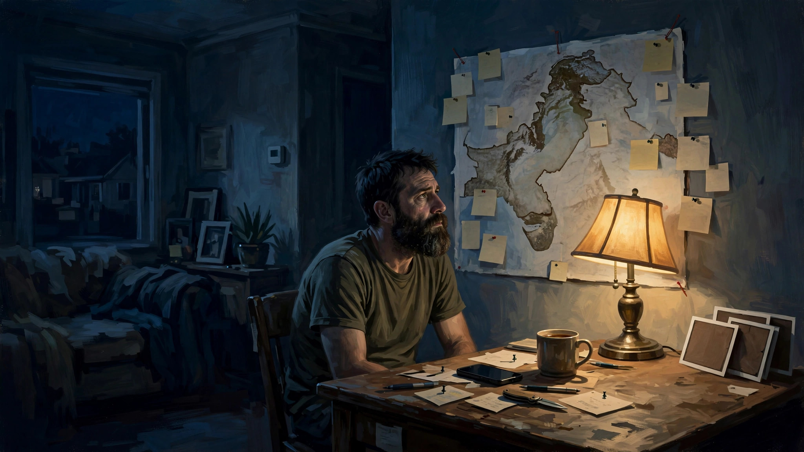

战火中的美好人性
盟约(covenant)，是契约，誓言，承诺。
听上去像生字释义，像同义词列举。但都不是，这句话出现在一部意义沉重的电影的片尾。
“一诺千金”是中国人尊崇的传统美德，是君子品行的要求之一。推而广之，遵守诺言或盟约这也是人类奉行的基本道德准则之一。但在战火纷飞、人性崩坏的背景中，这就成了难以实现的美德甚至奢求。
电影《盟约》就讲述了这样一个关于立约、守约和履约的故事。故事背景是美国遭受911恐怖袭击后的阿富汗战场。美国军方在打击塔利班的过程中，与一些反对塔利班而且会讲英语的当地人士达成一个约定。这些人为美军充当翻译和向导。作为回报，美国政府承诺向这些人发放赴美签证，以保护其不受塔利班的报复和迫害。（以下剧透提醒）
电影的两位男主一位是美军中士John，另一位是阿富汗翻译艾哈迈德。John接到任务，在艾哈迈德的帮助下，带领一个小分队去搜查并破坏一些塔利班武器库。起初两人合作不太愉快，John觉得艾哈迈德有点自负，不太听命令。但后来发现艾哈迈德其实是个很有能力的人，不单是个合格的翻译，更是个优秀的战士。他无论是临场应变能力还是战术意识都不错，表现出非凡的军事素养。稍微讲下艾哈迈德的背景，他有个临盆的妻子，加入美军很大一部分动机是希望得到美国签证，带妻子孩子全家移民美国，从此远离战乱。正因为这个背景，John和他团队里的美军士兵刚开始对艾哈迈德不太信任，认为他就是冲着签证才帮他们，立场并不坚定，随时可能倒戈。但后面发生的事情彻底改变了John的看法。
一次出任务，John的小分队遭到塔利班伏击。由于寡不敌众，节节败退。最后小分队的其他成员全部阵亡，只剩下John和艾哈迈德两人。两人侥幸逃脱，开始了一场逃亡之旅。然而，由于他们深入塔利班的势力范围，逃亡过程非常不顺利，险象环生。好在成功逃过了几次追击。最后一次，他们在一处废弃民房休息时被几名塔利班士兵发现，John不幸受伤被俘。所幸塔利班的高级军官早有命令要抓活的，John才没被当场击毙。正当John要被抬上塔利班的车运走时，艾哈迈德突然出现，迅速解决了那几名塔利班士兵，救下了John。之后，艾哈迈德动手做了个一个担架和一个简易二轮车，然后孤身一人带着受伤不能动弹的John翻山越岭，继续逃亡。不知过了多少个艰辛的日夜，艾哈迈德带着John终于来到美军基地附近。当他们在一个水果摊稍事歇息时，一队塔利班士兵刚好开车路过。他们看到两轮车上躺着个蒙着被子的人，起了疑心，掀开被子一看是美国人，双方立刻开始交火。眼看经过九死一生的两人就要命丧当场，幸好附近巡逻的美军及时赶到，消灭了塔利班，救下了John。
John经过紧急治疗被送回国，身体逐渐康复。从苏醒的那一刻起，他心里一直在挂念着艾哈迈德。想起他身负重伤时，是艾哈迈德拼死救了他。并且在之后的逃亡路上一边悉心照料他，一边注意躲避塔利班的追击。最后经过千辛万苦的跋山涉水把他交到美军手上。回忆起这一幕幕惊心动魄又感人肺腑的场景，让身在美国的John每天坐立不安。他身体一康复就着手寻找艾哈迈德的下落，希望早日把艾哈迈德一家接到美国来，以免遭到塔利班的报复。可惜寻找的过程非常不顺利。自从John回国后，艾哈迈德就失去了消息。塔利班悬赏捉拿他，美军也在找他，但艾哈迈德不知所踪，如同人间蒸发一般。John焦急万分，因为他知道塔利班随时都有可能找到艾哈迈德一家。他每天给美国各个相关政府部门打电话查询，但这些部门办事效率低下，根本提供不了他需要的帮助，只会一直让他等待。最后接近情绪崩溃的他决定不再等待，他要自己重返阿富汗寻找艾哈迈德。John的妻子对他的想法表示理解和支持，并鼓励他回去。因为她深知她丈夫欠人家一条命，不报这个恩他无论如何良心会过不去的。

后面John具体怎么寻找艾哈迈德的过程就不进一步剧透了，总之过程惊心动魄，好在是happy ending。John最终成功地营救了艾哈迈德一家，作为一个美国人履行了对盟友的誓言。
影片结尾的字幕中介绍，有300多名阿富汗翻译及他们的家人因帮助美军而遭到塔利班杀害，另外还有数千名此类人士仍在藏匿行踪。艾哈迈德是幸运的，因为他救助的美国人信守并履行了盟约。可惜他的很多同胞没有这么走运。也许他们帮助美军不是出于什么正义良知的召唤，只是为了让家人逃避战火而铤而走险。但做善事动机根本不重要，重要的是善事本身。毕竟，哪怕一瞬间的善念，也是人性中美好的闪光点。
信守盟约是美德，知恩图报何尝不是呢？John完全可以平静地过完余生，毕竟以他个人的力量履行这样政府级别的盟约的确有太大困难。但他同救他的艾哈迈德一样是一个有血有肉有良知的人，他无法在救命恩人生死未卜的情况下心安理得地度过余生。
艾哈迈德所做的远远超过了一名普通翻译的职责范围，他不顾巨大的危险，带着重伤的战友穿过枪林弹雨，跋山涉水，直到把战友送到安全地带。这中间体现出来的巨大勇气和善良，远远超过了他应得的回报（美国身份）。也许有人会质疑艾哈迈德的动机，但质疑者如果代入他的处境，会为这种质疑本身而感到羞愧。
善待他人、知恩图报、信守盟约，这部电影用一个基于真实事件的完整故事完美地诠释了这些人世间最好的美德，并告诉我们：战争带来的不只是毁灭和伤痛，也有经过战火洗礼的人性中的美好，还有希望。